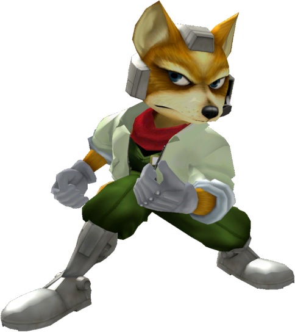

|  | Ranked 1st of tier list : FOX |
| Weight | |
|---|---|
| 22nd heaviest (23rd in PAL) | |
| Shield stats | |
| Roll lenght | 15th longest |
| Shield size | 10-12th biggest |
| Grab range | 14th longest |
| Wavedash lenght | 14th longest |
| Movement stats | |
| Walking speed | 1st-2nd fastest |
| Turning speed | 16th fastest |
| Running speed | 2nd fastest |
| Aerial stats | |
| Jump squat | 4 frames (1st fastest) |
| Short hop | 18-22nd highest |
| Aerial speed | 26th fastest |
| First jump height | 7th highest |
| Seconde jump height | 6-7th highest |
| Total jump height | 6-8th highest |
| Average fall speed | 2nd fastest |
| Fast falling speed | 3rd fastest |
| Falling speed | 3rd fastest |
| Ledge stats | |
| 0-99% ledge roll | 20th longest |
| 100%+ ledge roll | 19th longest |
| 0-99% ledge attack range | 4th farthest |
| 100%+ ledge attack range | 18th farthest |
| Intangible ledgedash (Optimal/Perfect) | 15/16 frames |
| Notable players | |
| Leffen, Mango, Chillindude, Hax, Lucky, Mew2King, SDAT, Silent Wolf, Fiction, Armada | |
| Smashboard forum | |
| http://smashboards.com/forums/fox.68/ | |
| Helpful guide on Fox | |
| http://smashboards.com/guides/guide-to-ace-arwing-pilot-fox-mcloud-updated-for-2015.100 | |
| Technique guide | |
| https://youtu.be/7F9VrGuShSg | |
Fox currently ranks 1st on the SS tier in the tier list, true to his position he is an extremly efficient fighter, with fast attacks, excellent comboing and damaging ability, long recovery options, and numerous options to approach the opponent, boasting some of the best neutral game options among the entire cast. He has KO options and setups at a wide bariety of percentages, and his high falling speed makes him resilient to vertical KOs. His aerial game also includes several low-lag yet effective and powerful moves to complement his ground game, especially when SHFFLd, and is incredibly effective at approaching and edgeguarding. Fox's main tool in his success, however, is his Reflector(also known as the shine), which is one of the most versatile tools ine the game. Aside from its intended purpose, it is the fastest move in the game, has set knockback and can be jump canceled; this allows for shine spike gimps, neutral stance resets, getup option mixups, and even combos when wavedashing is incorporated. Despite being top tier, Fox is not flawless. He has an extremely high technical learning curve, as most of his techniques require extremely nimble fingers and fast reaction time.
Additionally, he aksi has a very highg cerebral learning curve as Fox players must be wary of making even a single mistake. Fox's high falling speed makes him very easy to combo and chaingrab off aof a single conversion from he opponent, and his light weight can result in extremely early horizontal KOs if the players DI is poor. Although he boasts a very long recovery distance, he only has linear recovery options, which makes it easier for certain characters like Marth to predict his recovery path and edgeguard or gimp him.
Regardless, his pros greatly outshine his cons, and Fox is notable for being one of two characters in Melee (the other and Falco) to have no disadvantageous matchups with only three (Falco, Marth and Samus) being considered even.